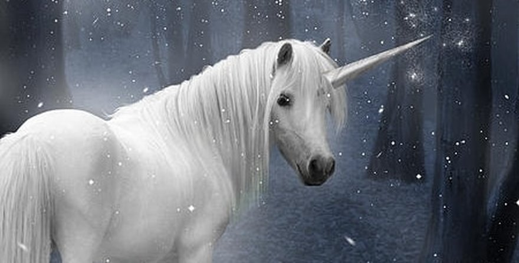

The White Unicorn
The white unicorn is a perfect combination of female and male energy.
- The white color connects this creature to the moon which has been a symbol of femininity throughout the ages.
- But, then again, its horn stands for strength and power and represents male energy.
- The white color stands for integrity and innocence.

click here to go back to index